sudo apt update
sudo apt install -y openjdk-8-jdk
java -version
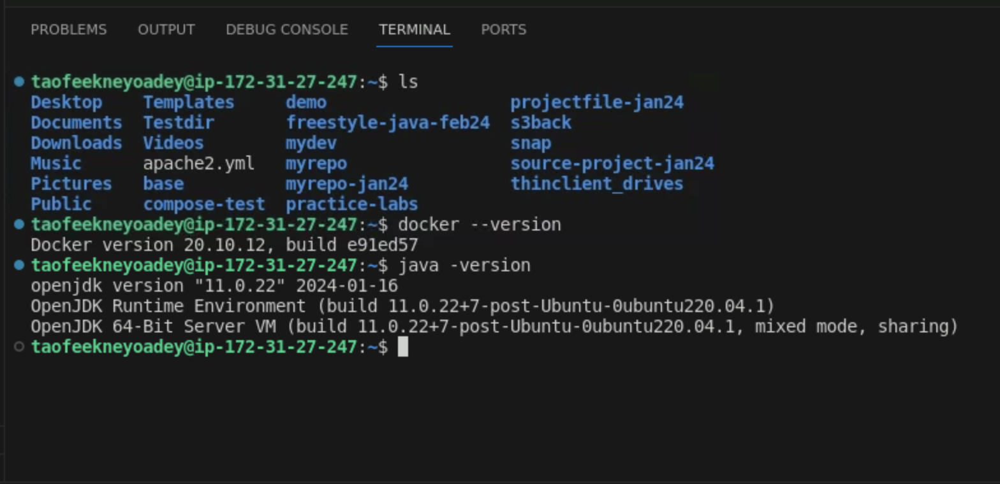
wget -q -O – https://pkg.jenkins.io/debian-stable/jenkins.io.key | sudo apt-key add –
Add the jenkins pkg repo to package manager: Edit the file:
sudo nano /etc/apt/sources.list
Add this line at the end of the file and save it:
deb https://pkg.jenkins.io/debian-stable binary/
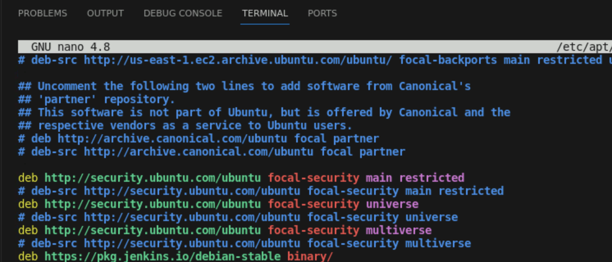
Execute:
sudo apt-get update
Install Jenkins:
sudo apt-get install -y jenkins
sudo systemctl restart jenkins
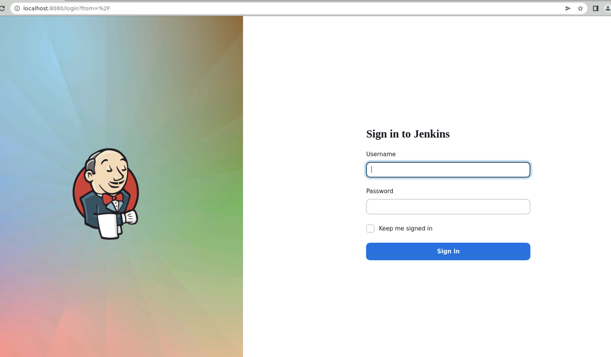
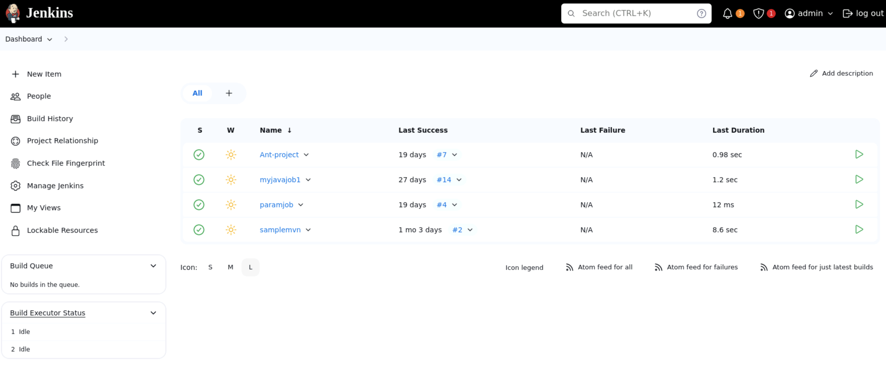
sudo apt-get update
sudo apt-get install -y docker.io
docker --version
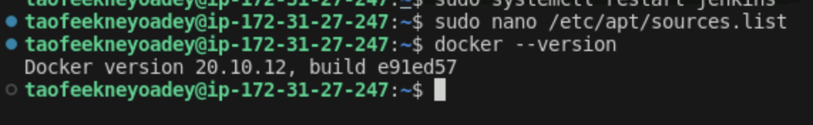
Install & check git
sudo apt-get update
sudo apt-get install -y git
git --version
git config --global user.email "YOUR_EMAIL_ID
git config --global user.name "YOUR_USER_NAME
git config --list
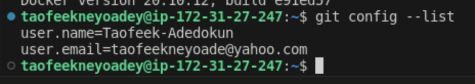
Create a GitHub repository under your account
Your_github_project_url
git@github.com:Taofeek-Adedokun/-Docker-Jenkins-Pipeline-for-CI-CD.git
git clone git@github.com:Taofeek-Adedokun/Docker-Jenkins-Pipeline-for-CI-CD.git
cd Docker-Jenkins-Pipeline-for-CI-CD
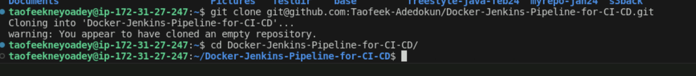
nano Dockerfile
FROM openjdk:8
COPY . /var/www/java
WORKDIR /var/www/java
RUN javac Hello.java
CMD ["java", "Hello"]
cd ..
nano Hello.java
class Hello { public static void main(String[] args) { System.out.println("This is a java app created using Docker"); } }
docker build -t test_image .
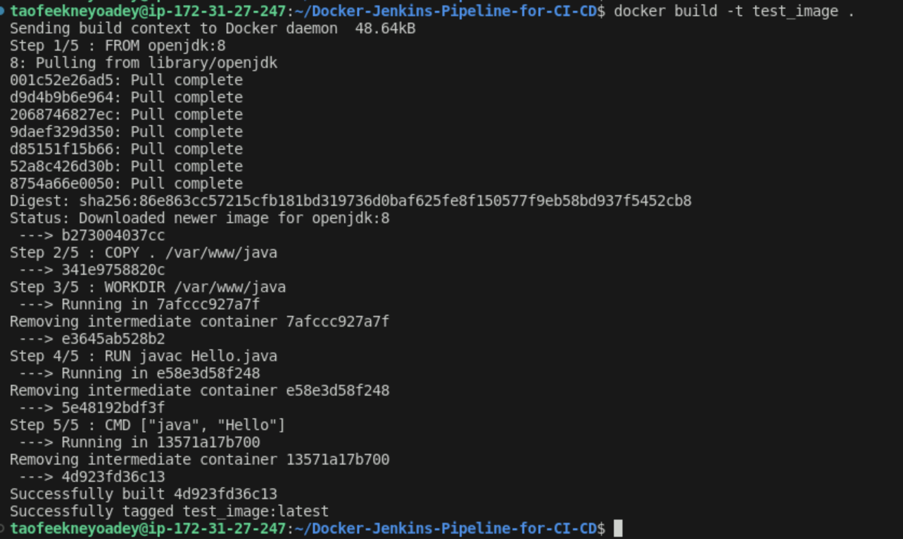
docker images
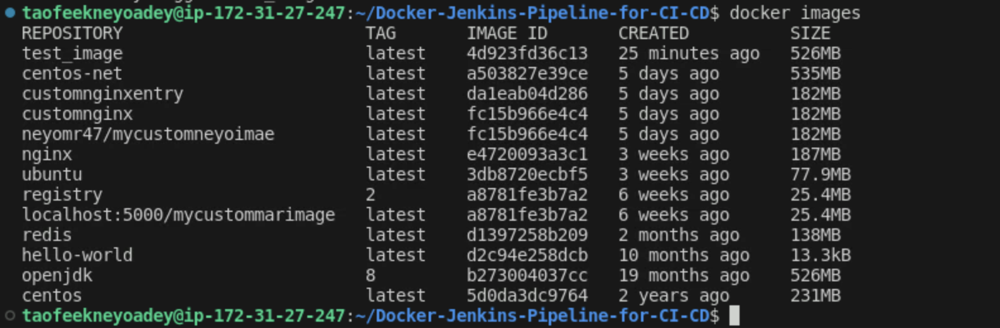
docker rmi test_image
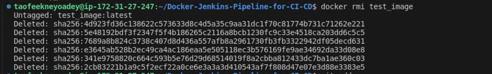
git add .
git commit -m "Dockerfile created for new image
git push origin main
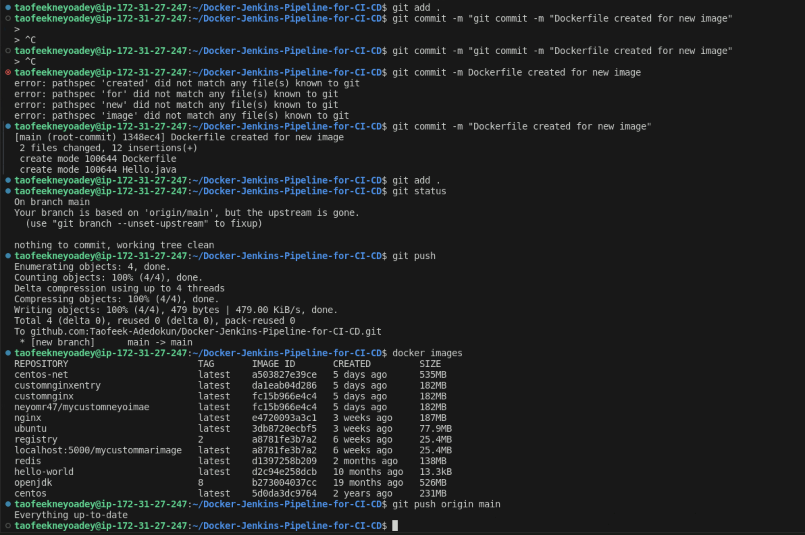
Jenkins > New Item > Freestyle project (BuildJob)
SCM > Git > https://github.com/Taofeek-Adedokun Docker-Jenkins-Pipeline-for-CI-CD.git
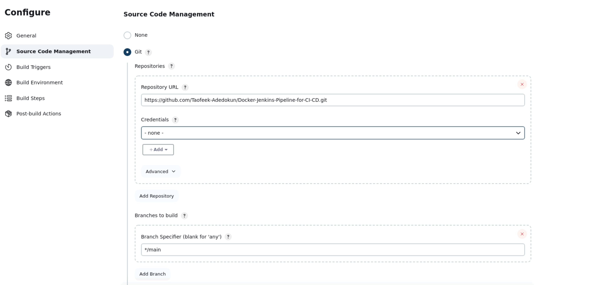
Build > Add build step > Execute Shell
docker build -t neyo_mypro_image .
docker login -u neyomr47 -p *******
docker tag neyo_mypro_image neyomr47/neyo_mypro_image:latest
docker push neyomr47/neyo_mypro_image:latest
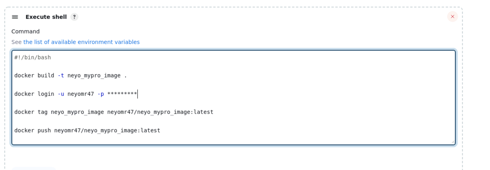
Save
Build the Job
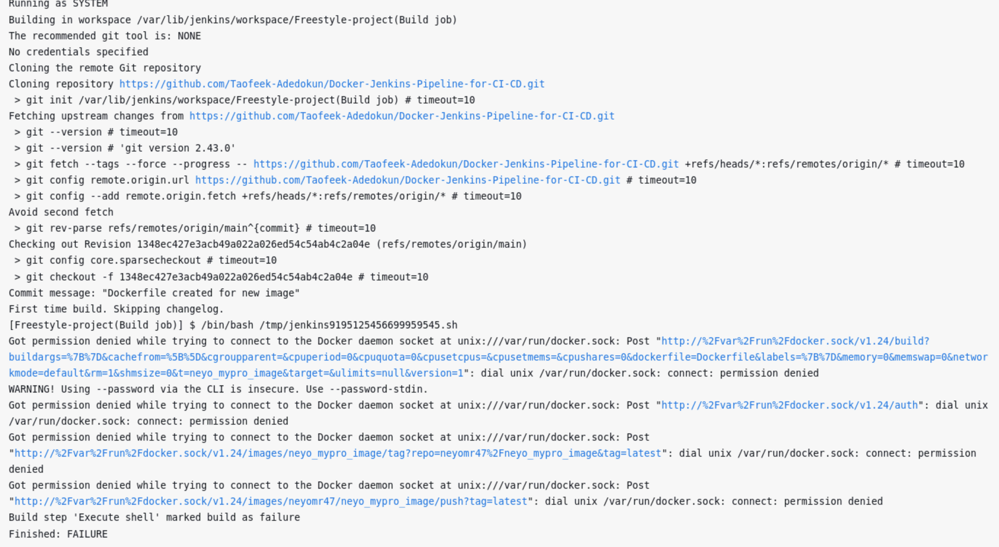
sudo usermod -aG docker jenkins
Restart Jenkins
sudo systemctl restart jenkins
sudo chmod 777 /var/run/docker.sock
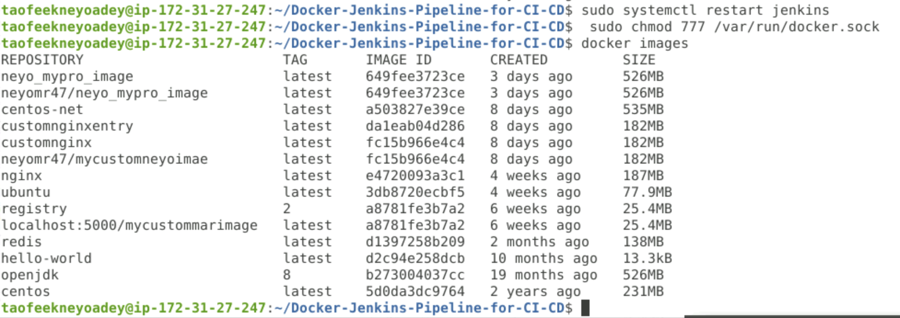
Relogin & build the job once again
docker images
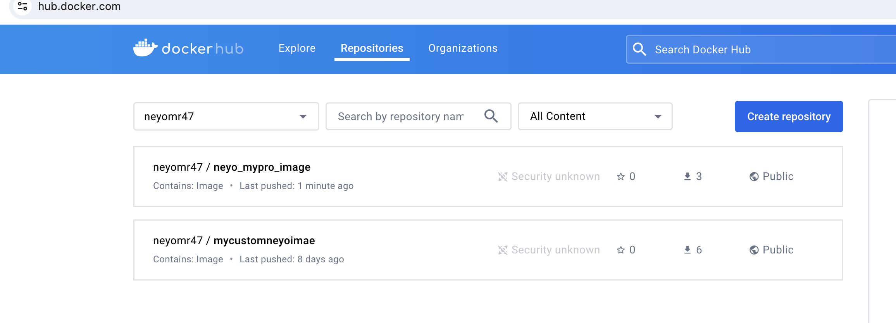
Automate
Build Trigger
Poll SCM - duration * * * * *